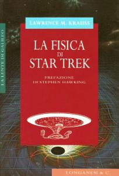

The Phisics of Star Trek |
|  |
| AUT | Lawrence M. Krauss |
| Edizione italiana: | La fisica di Star Trek |
| TRA | Libero Sosio |
| PAG | 213 |
| EDI | Longanesi, 1995 |
| ISBN | 88-304-1390-9 |
In questo saggio vengono spiegati i concetti fisici che sono alla base delle
possibilità di attuazione (delle impossibilità) delle mirabolanti invenzioni
presenti in Star Trek.